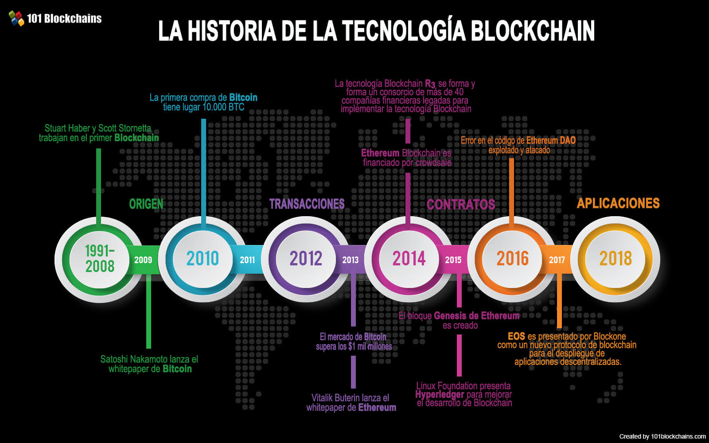

Historia
En 1983, el criptógrafo estadounidense David Chaum concibió un sistema criptográfico monetario electrónico llamado eCash. Más tarde, en 1995, implementó DigiCash, que utilizaba la criptografía para volver anónimas las transacciones de dinero, aunque con una emisión y liquidación (pago) centralizado. Este sistema requería un software para retirar dinero de un banco y designar claves cifradas específicas antes de que puedan enviarse a un destinatario. Esto permitió que la moneda digital no fuera rastreable por el banco emisor, el gobierno o cualquier tercero. En 1996, la NSA publicó una investigación titulada How to make a Mint: the Cryptography of Anonymous Electronic Cash. Esta investigación describía un sistema de criptodivisa, publicada en una lista de correo del MIT. Más tarde, en 1997 fue publicada en The American Law Review (Vol. 46, Issue 4)
El concepto o idea de criptomoneda fue descrita por primera vez por Wei Dai, en 1998, donde propuso la idea de crear un nuevo tipo de dinero descentralizado que usara la criptografía como medio de control, mientras que la primera criptomoneda que se creó fue Bitcoin, creada en 2009 por el desarrollador de pseudónimo Satoshi Nakamoto, el cual usa el conjunto de funciones criptográficas SHA-2 (exactamente el SHA-256) como su esquema PoW (prueba de trabajo). Posteriormente, han aparecido otras criptomonedas, como Namecoin (un intento de descentralizar el sistema de nombres de dominio DNS, lo que haría muy difícil la censura de internet), Litecoin (el cual utiliza scrypt como esquema PoW, así como también, para tener una confirmación de transacción más rápida), Peercoin (el cual utiliza un esquema híbrido PoW/PoS [prueba de trabajo/prueba de participación], además tiene una tasa de inflación del alrededor de 1 %) y Freicoin (el cuál implementó el concepto de Silvio Gesell agregando depreciación en el tiempo). Muchas otras criptomonedas han sido creadas, aunque no todas han sido exitosas, en especial aquellas que no han aportado ninguna innovación.
